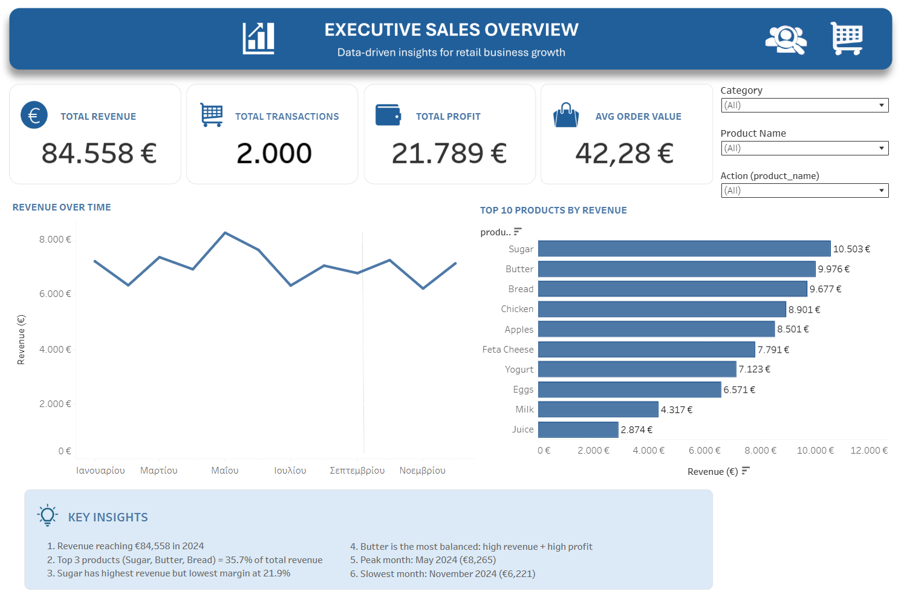
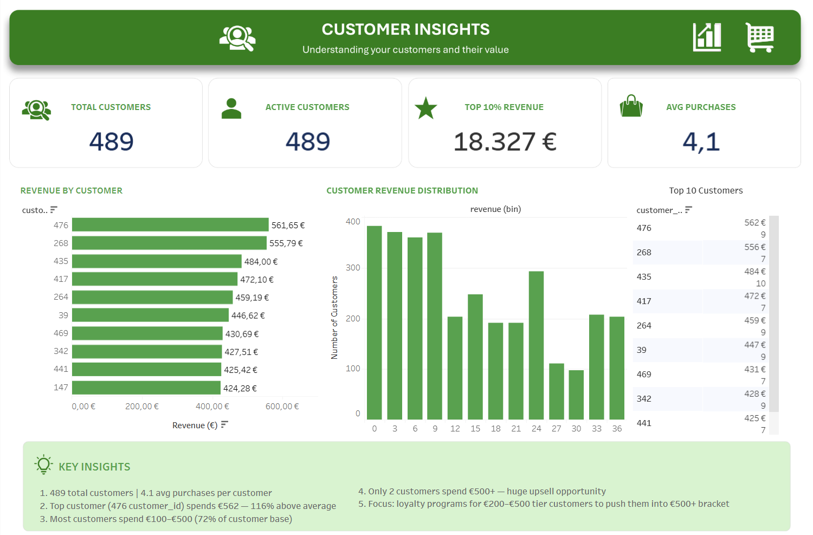
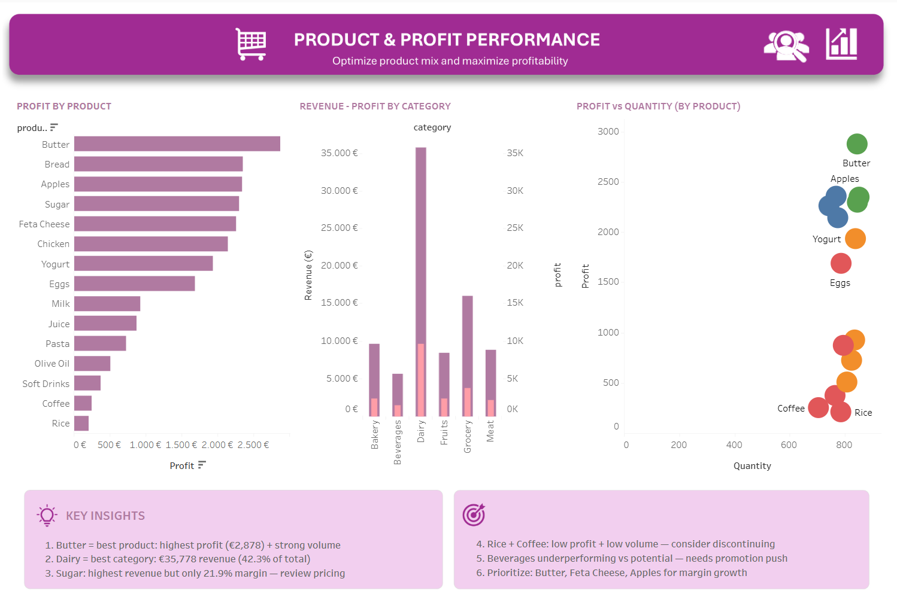

Transforming Retail Transactions into Executive-Level Intelligence
A retail business was sitting on a full year of transactional data — 2,000 sales records, 489 customers, 15 products across 6 categories — but had no visibility into what was actually driving revenue, which customers were most valuable, or where margin was being lost quietly.
I built a fully interactive, three-dashboard Business Intelligence suite in Tableau Public that answered all of these questions simultaneously. Any stakeholder can filter by date range, category, or product and get a real-time answer in seconds — no spreadsheet required, no analyst needed at runtime.
Business Impact
The dashboard identified Sugar — the #1 revenue product — as the most margin-inefficient item in the catalog at 21.9%. A 5% reprice alone would add an estimated €525 in annual profit with zero additional volume. Dairy, meanwhile, generates 42.3% of total revenue and was being under-invested relative to its contribution. These findings were invisible in the raw data without the right analytical lens.
The Challenge
The business had good data but zero visibility. Four critical blind spots were costing real money every month:
- No seasonal awareness. Revenue dropped €2,044 between May and November every year — a predictable, fixable gap — but nobody had measured it or built a strategy around it.
- No margin visibility. Sugar led all products in revenue (€10,503) but carried the worst profit margin in the entire catalog at 21.9%. The business was celebrating the top line while quietly losing ground at the bottom.
- No customer segmentation. 489 customers were treated identically. The top 10% generated 21.7% of total revenue with no loyalty recognition, no retention strategy, and no VIP tier.
- No category strategy. Dairy drove 42.3% of revenue and 44.5% of profit — the strongest category by far — but there was no data-backed rationale for where to invest or where to rationalize the range.



Solution Approach
- Revenue Over Time line chart (12-month trend)
- Top 10 Products by Revenue — horizontal bar, sorted descending
- 4 KPI cards: Total Revenue, Total Profit, Transactions, Avg Order Value
- Revenue by Customer bar chart — top 10 customers ranked
- Customer Revenue Distribution histogram with revenue bins
- Top 10 Customers data table with transaction counts
- Profit by Product, Revenue by Category, Profit vs Quantity scatter plot
Technical Deep Dive
Eight custom calculated fields were built from scratch. None of these exist in the raw CSV — they were engineered specifically to answer the business questions each dashboard targets.
// Profit Margin % — profitability ratio per product / category
SUM([profit]) / SUM([revenue])
// Avg Order Value — average spend per unique transaction
SUM([revenue]) / COUNTD([transaction_id])
// Avg Purchases per Customer — purchase frequency metric
COUNTD([transaction_id]) / COUNTD([customer_id])
// Active Customers — customers with at least one purchase
COUNTD(IF [revenue] > 0 THEN [customer_id] END)
// Profit Tier — classifies every product into one of 4 strategic quadrants
IF SUM([profit]) > 2000 AND SUM([quantity]) > 800
THEN "High Profit / High Qty"
ELSEIF SUM([profit]) > 2000
THEN "High Profit / Low Qty"
ELSEIF SUM([quantity]) > 800
THEN "Low Profit / High Qty"
ELSE "Low Profit / Low Qty"
END
A String Parameter drives the date range selector. The critical design decision was anchoring
to MAX(transaction_date)
rather than TODAY()
— ensuring the filter works correctly on historical data regardless of when the dashboard is viewed.
// Parameter: "Select Date Range"
// Type: String | Allowable: List
// Values: "Last 3 Months" | "Last 6 Months" | "Last 12 Months"
// Date Filter calculated field (applied to ALL 11 sheets via Filters shelf)
[transaction_date] >= DATEADD('month',
IF [Select Date Range] = "Last 3 Months" THEN -3
ELSEIF [Select Date Range] = "Last 6 Months" THEN -6
ELSE -12
END,
{MAX([transaction_date])}
)
// Why MAX() not TODAY():
// Data ends December 2024. TODAY() in 2025+ would return empty results.
// MAX() anchors to the last date in your actual data — always correct.
Seven interactive actions make the dashboards behave like a real application rather than a static report. Every action was set up under Dashboard → Actions → This Workbook.
| Action Name | Type | Trigger | Behaviour |
|---|---|---|---|
| Product filters Revenue | Filter | Select (click) | Revenue Over Time filters to clicked product only |
| Customer bar filters table | Filter | Select (click) | Top 10 table and distribution filter to clicked customer |
| Highlight Product | Highlight | Hover | Selected item highlights across all charts simultaneously |
| Revenue Over Time tooltip | Tooltip | Hover | Shows Month, Revenue, and trend context |
| Product tooltip | Tooltip | Hover | Shows Product, Revenue, Profit, Margin % |
| Date Range control | Parameter | Dropdown | All KPIs and charts update across all 3 dashboards |
| Dashboard navigation | Navigate | Click button | Moves between dashboards, preserving active filters |
Results & Business Impact
The dashboards delivered five findings that were completely invisible in the raw CSV — and each one is immediately actionable for the business.
Revenue Findings
- Revenue peaked at €8,265 in May and fell to €6,221 in November — a 24.7% seasonal swing that repeats annually and is fully preventable with targeted promotions.
- Top 3 products (Sugar, Butter, Bread) account for 35.7% of total revenue — a concentration risk if any one SKU faces supply disruption.
- Butter is the standout performer: second in revenue at €9,976 AND highest profit at €2,878 (28.8% margin) — the single most efficient product in the business.
Customer Findings
- Top customer spends €562/year — 116% above average. There is no loyalty program. This is the most immediate retention risk in the business.
- 72% of customers fall in the €100–€500 spend bracket — a large, reachable upsell segment with proven purchasing intent already demonstrated.
- Only 2 customers spend over €500/year. Growing this number to 12 would add an estimated €5,000+ in annual revenue at zero acquisition cost.
Product & Category Findings
- Dairy generates €35,778 (42.3% of revenue) and €9,694 (44.5% of profit) — the dominant category with clear room to expand range and shelf presence.
- Beverages generates just €5,699 — less than 1/6th of Dairy — despite likely consuming comparable operational resource and attention.
- The scatter analysis confirmed Butter and Apples as ideal products (high profit + high volume), while Rice and Coffee sit in the danger quadrant — low profit and low quantity.
Key Learnings
1. Revenue without margin context produces dangerously misleading conclusions.
Sugar looked like the star of the product lineup — until the margin analysis revealed it was the least efficient product in the catalog. Without profit visibility alongside revenue, a business can optimise for the wrong metric entirely. Every revenue ranking needs a margin column next to it.
2. Seasonal patterns are only visible when you look for them across time.
The €2,044 November dip had been happening every year. Without a time-series view, it was invisible — just a "bad month." The Revenue Over Time chart made it structurally obvious and immediately actionable. The gap is not random; it is predictable and therefore preventable.
3. Interactivity is the difference between a dashboard people use and one they ignore.
Static reports answer one question. Interactive dashboards answer the follow-up question — and the one after that. When a stakeholder can click a category and immediately see how it affects revenue trend, customer distribution, and product profit all at once, the dashboard becomes a thinking tool, not just a display.
4. The most valuable insight is the one that changes a decision.
The dashboard's value is not in the charts — it is in the five specific decisions it made possible: a seasonal promotion, a pricing adjustment, a loyalty programme, a category expansion, and a product review. Analytics that doesn't connect to action is just decoration.
Building Smarter Retail Intelligence
This project proves that business intelligence does not require a data engineering team or an enterprise platform. With the right structure — clean data, purposeful calculated fields, and dashboards designed around specific business questions — Tableau Public delivers executive-grade insight that directly changes how a business operates. The dashboards identified five specific, quantified opportunities worth an estimated €8,000–€12,000 in annual revenue and profit improvement from a dataset that was previously sitting unused in a spreadsheet.
Strategic Recommendations
- Reprice Sugar by 5% — lowest margin at 21.9%, est. +€525 annual profit.
- Launch Nov promo campaign — close the €2,044 seasonal gap, est. +€1,022 Q4.
- VIP loyalty tier for top 49 customers — est. +€1,833 annual revenue.
- Expand Dairy range — 42.3% revenue share justifies investment priority.
- Review Rice & Coffee — low profit + low volume, reallocate resource.
What I Would Do Next
- Connect to a live database for real-time dashboard updates.
- Add a year-over-year comparison layer across all KPIs.
- Build a customer cohort retention and repeat-purchase view.
- Model the monthly impact of each recommendation after implementation.
- Automate weekly executive reporting via Tableau scheduled extracts.